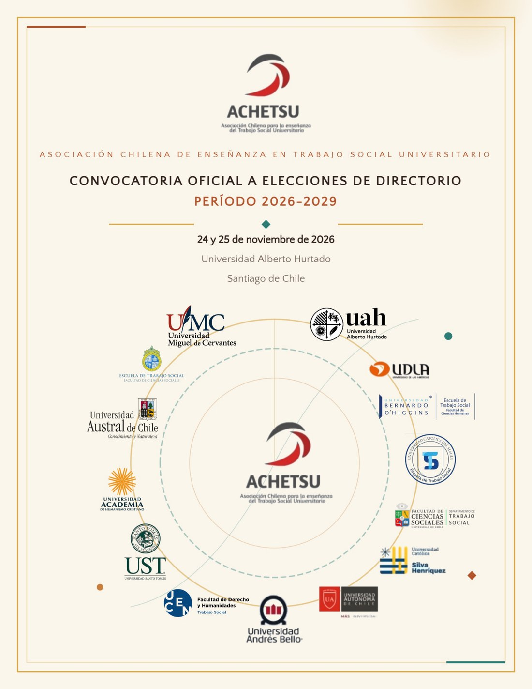

Declaración de aceptación de candidatura
Modelo oficial de declaración escrita de aceptación, requerida para cada integrante de la lista.
Descargar plantilla (.docx) ↓ACHETSU convoca a sus socias y socios a participar en el proceso electoral destinado a renovar democráticamente su Directorio. Esta página reúne, de forma autocontenida, todos los documentos oficiales y descargables por sección, para que puedas revisarlos sin conexión y sin depender de enlaces externos.
ACHETSU convoca a sus socias y socios a participar en el proceso electoral destinado a renovar democráticamente su Directorio para el período 2026-2029.

Afiche oficial de convocatoria · descargable en el documento completo.
Este proceso se desarrolla en un momento significativo de la trayectoria de la Asociación: fortalecimiento institucional, consolidación de su personalidad jurídica, incremento de socios institucionales y naturales, y ampliación de su presencia en espacios de colaboración académica nacionales e internacionales.
En este contexto, el Directorio invita a todas y todos los socios habilitados a participar activamente en el presente proceso electoral, contribuyendo al fortalecimiento de la democracia interna de la Asociación y a la construcción de una agenda común para el próximo período.
El Directorio estará compuesto por cinco integrantes. Todos los cargos son honoríficos: no generan remuneración, contrato de trabajo ni relación laboral o previsional con la Asociación.
Las candidaturas se presentan mediante listas cerradas de cinco integrantes, con representación de al menos tres instituciones de educación superior socias de ACHETSU.
Personas elegibles: socios y socias naturales activos, y representantes acreditados de instituciones socias activas, en pleno ejercicio de sus derechos sociales y sin suspensión vigente.
Modelo oficial de declaración escrita de aceptación, requerida para cada integrante de la lista.
Descargar plantilla (.docx) ↓Formulario oficial para presentar la lista candidata completa ante la Comisión Electoral.
Descargar plantilla (.docx) ↓Modelo de carta de respaldo de representante institucional para candidatos/as que representen a una casa de estudios.
Descargar plantilla (.docx) ↓Se considerarán habilitados para sufragar y para integrar candidaturas únicamente quienes mantengan la calidad de socios activos, conforme a los Estatutos, previo cumplimiento de los requisitos de regularización.
Candidaturas
05 · 11 · 2026
Plazo de regularización para postular a cargos directivos.
Electores
23 · 11 · 2026
Plazo de regularización para ejercer el derecho a voto.
Todas las etapas del proceso, desde la convocatoria hasta la proclamación de resultados.
| Etapa | Fecha |
|---|---|
| Convocatoria a Asamblea Ordinaria mediante publicación en diario de circulación nacional | 30 de octubre de 2026 |
| Publicación padrón electoral (pendiente de regulación) | 30 de octubre de 2026 |
| Recepción de observaciones al padrón y actualización de socios/as activas elegibles | 30 de octubre al 5 de noviembre de 2026 |
| Fecha de corte para habilitación como candidatos/as | 05 de noviembre de 2026 |
| Publicación del padrón electoral definitivo para socios/as elegibles | 06 de noviembre de 2026 |
| Inscripción de listas | 6 al 11 de noviembre de 2026 |
| Revisión y validación de listas (criterios previstos en estatutos) | 12 al 13 de noviembre de 2026 |
| Publicación de listas aceptadas e inicio de período de candidaturas | 14 de noviembre de 2026 |
| Presentación pública de candidaturas y programas. Cada lista candidata debe comunicar su programa de trabajo de manera autónoma | 15 a 23 de noviembre de 2026 |
| Cierre y publicación de padrón electoral definitivo (voto) | 23 de noviembre de 2026 |
| Proceso de votación | 24 y 25 de noviembre de 2026 |
| Escrutinio y proclamación de resultados | 25 de noviembre de 2026 |
La Comisión Electoral elabora y publica el padrón electoral; verifica la condición de socio activo y el cumplimiento de obligaciones pecuniarias; revisa y valida las candidaturas presentadas; supervisa el proceso electoral; realiza el escrutinio y proclama oficialmente los resultados. Toda situación no prevista en la convocatoria será resuelta por la Comisión Electoral conforme a los Estatutos de ACHETSU.
Buscador autocontenido: funciona sin salir de este sitio. Busca por nombre o apellidos para socios/as naturales, y por universidad para representantes institucionales.
Académicas, académicos e investigadores asociados a una unidad académica universitaria de Trabajo Social.
Escribe al menos dos letras para buscar.
Busca por universidad o institución asociada; el representante puede cambiar con más frecuencia que la institución.
Escribe al menos dos letras del nombre de la universidad.
Cómo leer el estado: "Habilitado/a" corresponde a una X en la columna 2026 del registro recibido. Sin esa marca, el registro aparece como no habilitado y requiere regularización para votar o postular. El padrón público se actualiza únicamente después de la aprobación administrativa; esta página sincroniza una copia del registro oficial en cada publicación. Los cambios enviados quedan pendientes de revisión.
Estas acciones ayudan a preparar la participación. La consulta del padrón y las solicitudes de rectificación están disponibles directamente en esta página.
Según el artículo 44 de los Estatutos, las cuotas ordinarias anuales son:
Las instrucciones y el canal de pago aún no están publicados. Esta página se actualizará cuando ACHETSU informe cómo regularizar.
Información de membresía en el sitio institucional ↗Revisa tu nombre, correo, universidad y estado de habilitación. El buscador distingue socios/as naturales y representantes institucionales; para estos últimos, permite buscar por universidad.
Si necesitas corregir datos o informar antecedentes, envía una solicitud de rectificación. Los cambios quedan pendientes hasta la revisión y aprobación administrativa.
Abrir consulta del padrón y solicitar rectificación ↓Si cumples los requisitos de habilitación, prepara tu lista cerrada de cinco integrantes con los documentos oficiales del proceso.
El plazo de inscripción de listas es del 6 al 11 de noviembre de 2026.
Ver requisitos y descargar formularios ↑Las solicitudes de incorporación se reciben en los formularios existentes. La elegibilidad electoral se determinará según los Estatutos y la convocatoria oficial.
Escuelas, Departamentos y Carreras universitarias de Trabajo Social pueden solicitar su incorporación como socias institucionales, sujetas a los requisitos estatutarios.
Académicas, académicos e investigadores vinculados a unidades académicas universitarias de Trabajo Social pueden solicitar su incorporación como socios/as naturales.
El documento oficial de convocatoria, el afiche y las tres plantillas de candidatura están disponibles para revisar y descargar sin conexión desde esta misma página.